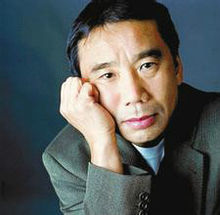

村上春树，日本现代著名小说家，生于京都伏见区。毕业于早稻田大学第一文学部演剧科，亦擅长美国文学的翻译，29岁开始写作，第一部作品《且听风吟》即获得日本群像新人奖，1987年第五部长篇小说《挪威的森林》上市至2010年在日本畅销一千万册，国内简体版到2004年销售总量786万，引起“村上现象” 其作品风格深受欧美作家的影响，基调轻盈，少有日本战后阴郁沉重的文字气息，被称作第一个纯正的“二战后时期作家”，并被誉为日本80年代的文学旗手，其作品在世界范围内具有广泛知名度。
代表作品:《挪威的森林》、《海边的卡夫卡》、《舞舞舞》、《1Q84》、《奇鸟行状录》
村上春树1949年1月12日出生在日本京都市伏见区，为国语教师村上千秋、村上美幸夫妇的长子。出生不久，家迁至兵库县西宫市夙川。其曾在著作《村上朝日堂的卷土重来》中提到 ：“我生在关西长在关西，父亲村上千秋是京都一和尚之子，母亲村上美幸是船场一商家之女，可说是百分之百的关西种。受家庭熏陶，村上春树非常喜欢读书。
1961年4月，入芦屋市立精道初级中学校就读，然而这位读书少年却不是个爱学习的好学生，进入中学后，村上常因不用功而挨老师的打。后来他承认当时自己内心相当叛逆，“不想学的、没兴趣的东西，再怎么样都不学”。读高中后村上的逆反心理更严重了，整日和女生厮混，抽烟、逃课，用中国的话说就是个“问题少年”。但村上的文学素养很高，他经常在校刊上发表文章，还翻译自己喜欢的美国惊悚小说。也就是在这段时间里，村上疯狂地迷上了爵士乐，常常饿着肚子将午餐钱省下来买唱片———他对爵士乐的痴迷一直延续到了今天。